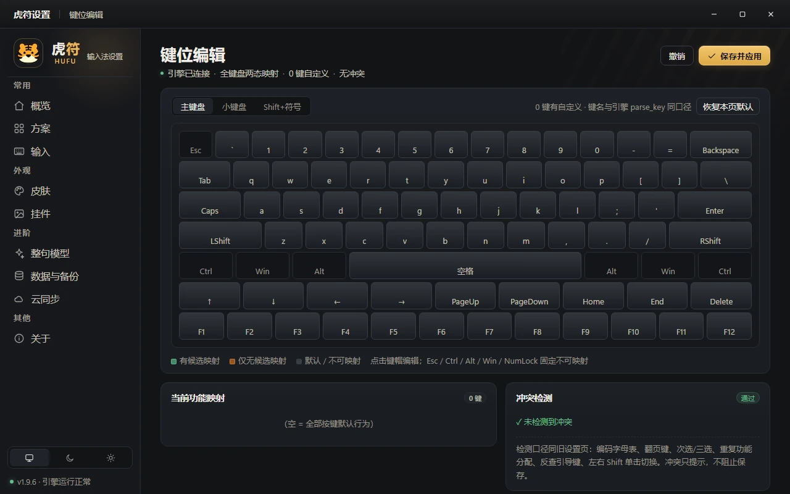
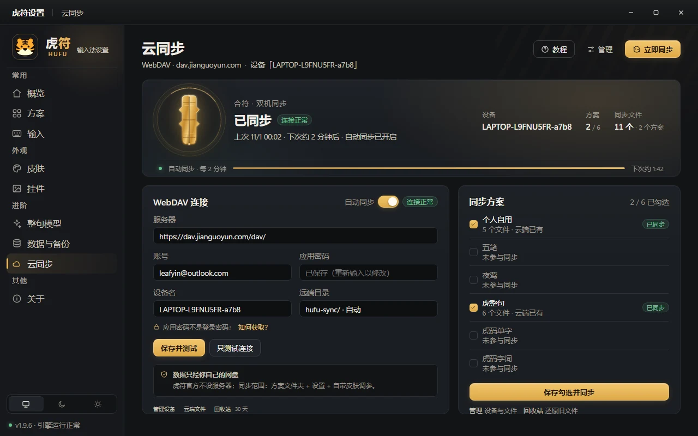

虎码整句
一句话，
一次打完。
27 个码元、最长 4 码。整句 / 字词 / 单字多方案，停顿后异步重排 top-5，下一次按键即刻生效。
v1.9.8 · 虎码整句 · 开源免费
虎符是一款以 虎码 为核心的跨平台中文输入法。就算不用整句，它也是第一梯队的定长输入方案输入平台；整句、字词、单字三种节奏，Windows / Linux / macOS 三端同源。
数据默认留在本机 · 无账号 · 无广告
演示：输入全码 syfdgvwihuvnagj，候选窗给出整句「让中文收指成句」并上屏。真实候选窗由输入法渲染，此处为网页示意。
00 / 名字 · THE NAME
虎符，古时调兵的信物。
今天，它调动的是你指尖的中文。
把虎码的规则、整句的模型、三端的体验，收进同一枚符里。
01 / 输入 · TYPING
以虎码整句为核心：ngram 组句与 Qwen3 神经重排协同工作。打一半，后半句已经在路上。
27 个码元、最长 4 码。整句 / 字词 / 单字多方案，停顿后异步重排 top-5，下一次按键即刻生效。
同一套码表、用户词与配置。
数字 / 分号 / 引号选重，滚轮缩放，拖动移位，置顶与软删；整块键盘都能改。
19 套矢量皮肤、21 个颜色角色；导入 .ssf，毛玻璃与亚克力材质。
默认全在本机；云同步只走你自己的 WebDAV，口令加密 + 回收站。
HuFu 原生 / Rime / 多多 / QQ五笔 / 虎整句。方案即目录，一键切换。
纯 ngram 99.73%；叠加 Qwen3 神经重排可达 99.9%。数据来自 v1.9.8 随包资源与基准报告 · 口径见 docs/status.md
02 / 外观 · SKINS
候选窗不只是候选窗。19 套矢量皮肤、21 个颜色角色，也能直接导入搜狗 .ssf；毛玻璃、亚克力、纯色，随心换。
点击即时预览。装好后，皮肤工作室里还有完整的 19 套与导入入口。
兼容搜狗 / 虎娘 .ssf 皮肤 · weasel 配色互导 · 以上为网页示意
皮肤预览：候选窗显示“我们、我、我军、War”；点击上方按钮切换皮肤。
03 / 设置 · SETTINGS
本地 Web UI，全图形化十页：方案、候选、键位、整句权重、皮肤工作室、用户词、云同步…… 改完即生效，不用重启。
KEYMAP / 键位
主键盘、小键盘、Shift+符号三套映射；点任意键帽录制新功能，冲突检测会直接标出重复分配。Esc / Ctrl / Alt / Win / NumLock 固定不可映射。


04 / 数据 · DATA
默认全部留在本机。需要多台同步时，虎符只连接你自己的 WebDAV（坚果云等），支持口令加密与回收站。官方不设服务器。
05 / 下载 · DOWNLOAD
免费、开源、无广告。Windows 直接安装；Linux 一行命令；macOS 正在路上。
Windows 10/11 · 旧版原地升级，码表、设置与学习记录全部保留
platform/linux/install.sh -umt
fcitx5 -r -d用户级一键安装 · 模型与主题分别用 -m、-t 显式安装 · 由社区协作者维护
从 GitHub Releases 下载 · 免费开源 · 无广告 · 无账号
免费。代码以 GPL-3.0-or-later 开源在 GitHub，没有账号、广告或付费墙。
虎符以虎码为核心，但内置 HuFu 原生、Rime、多多、QQ五笔、虎整句等多种方案，也支持导入码表。每个方案有独立的用户词，切换不串味。
默认不会。所有码表、用户词与设置都在本机；只有你主动开启云同步时，数据才会经端到端口令加密后写入你自己的 WebDAV。虎符官方不设服务器。
Windows 10/11 已稳定，Linux（fcitx5）可用，macOS（IMK）正在开发中，预计 11 月 20 日前后上线。三端共用同一套引擎、码表与配置格式。
不必须。不装模型也能用字词与单字方案；想要整句输入时，再单独下载约 500 MB 的模型，解压到安装目录即可自动装载，无需重启。
设置 → 皮肤 → 导入 .ssf，支持搜狗主流格式与 weasel 配色互导；也可以用内置的 19 套矢量皮肤，直接调颜色、圆角、材质与阴影。
07 / 打赏 · SUPPORT
虎符免费、开源、无广告。没有会员，也不卖词库。整句模型、云同步和十九套皮肤，都是业余时间一点点磨出来的。
金额随意，心意最重要。不打赏也完全不影响使用。